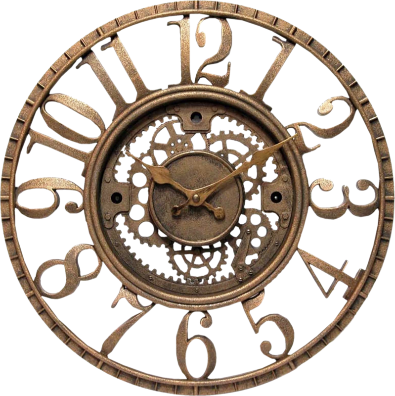

Правило №1
СОБЛЮДЕНИЕ ПИТЬЕВОГО РЕЖИМА
Сколько воды необходимо выпивать в сутки?
ОТВЕТ: от 2 до 2,5 литров
Как правильно пить воду?
ОТВЕТ: небольшими глотками на протяжении всего дня
К чему может призвести недостаток воды?
ОТВЕТ: плохое самочуствие, тошнота, сонливость
Прогноз соблюдения питьевого режима в разных социальных образованиях
|
Социальное образование |
Приблизительное количество людей |
Приблизительный обьём воды (в литрах) |
|
Ваша семья |
4 |
6,5 |
|
Жители вашего дома |
126 |
204,75 |
|
Жители Кривого Рога |
634 780 |
1 031 517,5 |
|
Жители Украины |
41 902 400 |
68 091 400 |
|
Все люди планеты Земля |
7 530 000 000 |
12 236 250 000 |
Правило №2
Калькулятор ежедневной нормы калорий
Калькулятор для женщин
Калькулятор для мужчин
Правило №3
Соблюдение здорового образа жизни
ПРАВИЛО №3
СОБЛЮДЕНИЕ ЗДОРОВОГО ОБРАЗА ЖИЗНИ
Зачем необходимо делать зарядку ?
Ответ:
Утренняя зарядка не только взбодрит тело с утра, но и придаст бодрости организму на целый день, увеличит поступление кислорода в организм и тем самым увеличит работоспособность мозга. Польза утренней зарядки: Утренняя зарядка пробуждает, оздоравливает и укрепляет организм.
К каким последствиям может привести отсутствие
физических упражнений ?
Ответ:
Отсуствие физический упражнений приведёт вас к ожирению, мышцы начнут атрофироваться и становятся слабее, как и кости начнут слабеть.
Как смотивировать себя делать зарядку ?
Ответ: Вариантов много, главное чтобы вы этого хотели.
КАК Я ВЫПОЛНЯЮ ЗАРЯДКУ
Правило №4
Режим сна
1. Здоровый сон
Специалисты организации Nemours, которая занимается здоровьем детей,
считают, что подростки должны спать около девяти часов в сутки
Тинейджеры редко столько лежат в кровати.
Как сон влияет на подростковое здоровье?
- Помогает подростку полноценно расти и развиваться;
- Напрямую влияет на внимательность и успехи в школе;
- Помогает добиваться успехов в спорте;
лишний вес и проблемы с сердцем, нарушения иммунитета
и эмоциональные проблемы
У подростков сбиваются биологические часы
В подростковом возрасте режим сна заметно отличается от детского или
взрослого. В этот период «сбрасывается» циркадный ритм (или
биологические часы), из-за чего тинейджеры засыпают и просыпаются
позже. Считается, что это связано с мелатонином — гормоном, который
регулирует наши биологические часы.У подростков он вырабатывается
позже, чем у маленьких детей или взрослых, что приводит к тому, что
ребёнок не хочет спать по вечерам.
 Мешают стресс и гаджеты
Есть и ещё одна причина нарушения сна — стресс. В подростковом возрасте
уребёнка больше обязанностей: ЕГЭ, репетиторы, грядущее поступление,
половое созревание. Мозг постоянно возбуждён.
Также достаточно распространённая причина нарушения сна — привычка
ложиться спать с телефоном или планшетом. Большое количество
информации не даёт мозгу успокоиться, поэтому подростку тяжело заснуть
К слову, такой же эффект вызывают поздние раунды в Fortnite или «Доту».
Как помочь подростку высыпаться?
Вот советы, которые помогают выровнять режим сна: Ложиться спать и просыпаться в одно и то же время, даже в выходные; Больше физической активности, но, главное, не перед сном (нужно около трёх часов, чтобы организм успокоился);
Пить меньше кофе, чая и энергетиков;
Перестать пользоваться электроникой хотя бы за час до сна;
Зажигать в комнате подростка ночник и проветривать по вечерам
Последствия недосыпа
ЕСЛИ подростки не получают положенных 3-10 часов сна каждую ночь, они могут
столкнуться со многими неприятными последствиями, такими как Депрессия. Согласно исследованиям, молодые люди, которые ложатся позже, более склонны к развитию депрессии и мыслям
о самоубийстве. В мозгу, похоже, существует связь между сном и депрессией.
Плохие оценки. У подростков, которые не высыпаются, обычно появляются проблемы с памятью и школьной успеваемостью.
Поведение. От нехватки сна может снижаться внимание, как результат — гиперактивность и новые скандалы
Дорожно-транспортные происшествия. У сонного подростка, как правило, замедленная реакция, поэтому он рискует стать участником ДТП
Сколько нужно спать людям в разном возрасте, чтобы быть здоровыми:
Новорожденные (до 3 месяцев) 14-17 часов
Дети (4-11 месяцев) 12-15 часов
Дети (от 1 года до 2 лет) 11-14 часов
Дошкольники (3-5 лет) 10-13 часов
Школьники (отб до 13 лет) 9-11 часов
Подростки (14-17 лет) 8-10 часов
Взрослые (18 лет - 64 года) 7-9 часов
Пожилые люди старше 65 лет 7-8 часов.
|
Член семьи |
Возраст |
Ложится спать |
Встает |
Всего спит |
Должен спать |
Вывод |
1. Каждый человек должен нести индивидуальную ответственность перед семьей и обществом за свое здоровье, путем соблюдения здорового образа жизни, в том числе и режима сна
2. Проживая в сообществе других людей, каждый из нас обязан заботиться о здоровье ближних и стараться поддерживать других в соблюдении режима
3. При наличии в семье людей с различными хфонотипами мы должны уважать их возможности и потребности, и если человек лег слать - необходимо поддерживать все условия, необходимые для его полноценного сна: тишину, тепло, темноту вокруг.
Правило №5
Тест на хронотип
Что такое хронотип?
Хронотип - это характер организации суточных (циркадных) биоритмов человека. Хронотип отражает суточную динамику функциональной активности различных органов
и систем организма (время пробуждения и засыпания, работоспособность, 24-часовой риты артериального давления и др.)
Хронотип отражает суточную динамику функциональной активности различных органов
и систем организма (время пробуждения и засыпания, работоспособность, 24-часовой риты артериального давления и др.) В зависимости от активности человека в то или иное время суток выделяют 3 хронотипа:
«жаворонки» - утренний тип;
«голуби» - дневной тип;
«совы» - вечерний тип
Психофизиологические различия утреннего и вечернего типа
| Параметр | «Жаворонок» | «Сова» |
| Время пробуждения | 4.00-6.00 | 8.00-10.00 |
| Время засыпания | 20.00-22.00 | 24.00-2.00 |
| Пик активности | 8.00-10.00 | после 16.00 |
| Доминирующее полушарие головного мозга | Левое | Правое |
| Творческая активность, воображение | Меньше | Больше |
| Характер мышления | Абстрактно-логическое, аналитическое | Конкретно-предметное, холистическое |
Выявление хронотипа работоспособности человека
1. Трудно ли вам вставать рано утром?
2. Если у вас есть возможность выбора, в какое время вы бы ложились спать?
3. Какой завтрак вы предпочитаете в течение первого часа после пробуждения?
4. Если вспомнить ваши последние размолвки на работе и дома, когда они преимущественно происходили?
5 .От чего легче отказаться:
6. Как точно вы рассчитываете время в течение 1 минуты?
7. Как легко вы можете изменить привычки, связанные с едой, во время отпуска?
8. Если рано утром предстоят важные дела, насколько раньше вы ложитесь спать?
9 Если вы ложитесь спать в 23.00, то какова степень вашей усталости?
10. Какова степень вашей зависимости от будильника, если утром вы должны встать в определенное время?
11. Как вы деятельны в первые полчаса после утреннего вставания?
12. Вы решили заниматься физкультурой .Ваш друг предложил заниматься дважды в неделю, по 1 часу утром, между 7 и 8 часами утра. Будет ли это благоприятным временем для вас?
13. Вам предстоит какая-либо работа или отъезд ночью, между 4 и 6 часами. На следующий день у вас нет никаких обязанностей .Какую из следующих возможностей вы выберете?
14. Иногда говорят “утренний человек ” и “вечерний человек”. К какому типу вы себя относите ?
15. У вас возникло решение серьезно заниматься закаливанием организма. Друг предложил делать это дважды в неделю, по 1 часу, между 22 и 23 часами вечера. Как вас устраивает это время?
Расчет:
Жаворонок 0-20,
Голубь 21-29,
Сова 30 - выше
Вы - «жаворонок». Ваши биологические часы идут быстрее, чем астрономические. Соответственно,
Вы раньше ложитесь спать и раньше встаете. В ряде случаев при значительном несовпадении
биологических и астрономических часов эта проблема может ухудшать качество жизни и
рассматривается как расстройство сна, получившее название СИНДРОМ ОПЕРЕЖЕНИЯ ФАЗЫ СНА.
Вы - «сова». Ваши биологические часы идут медленнее, чем астрономические. Соответственно, Вам
трудно заснуть вечером и трудно проснуться утром. В ряде случаев при значительном несовпадении
биологических и астрономических часов эта проблема может ухудшать качество жизни и
рассматривается как расстройство сна, получившее название СИНДРОМ ЗАДЕРЖКИ ФАЗЫ СНА.
Вы - «голубь». Ваши биологические часы идут приблизительно так же, как и астрономические. Это
наиболее благоприятный тип суточного ритма, при котором не возникает проблем как с отходом ко сну,
так и с подъемом.
Правило №6
Режим труда и отдыха
«Метод помидора»
Всего 5 простых шагов:
1. Определите ичетко сформулируйте задачу.
Очень важно понимать, что и зачем вы собираетесь делать следующие 25 минут
2. Заведите таймер на 25 минут.
Почему 25? Согласно исследованиям психологов, человек может концентрироваться
на чем-то максимум 50 минут. 25 минут — это один «помидор». Один помидор
беспрерывной работы
3. Приступайте к работе, пока не зазвонит таймер.
Дайте себе слово, не отвлекаться от задачи все 25 минут, Ни на звонки, ни на
сообщения или письма, ни на коллег. Только работа над поставленной задачей
4. Сделайте перерыв на 5 минут.
Можно ответить на пропущенные звонки и письма, а лучше встать и размяться.
5. После 4 помидоров сделайте большой перерыв.
1.Определите доступное время
Наверняка у вас есть дела, которые вы делаете каждый день и тратите на них
определенное количество времени. Есть соблазн включить и его, но будьте
реалистами — вам нужно планировать свободное время. Заранее решите, сколько
свободного времени потратите на работу, сколько на саморазвитие, а сколько на
здоровье, семью и развлечения.
2.Распланируйте основные действия
Какие действия вам обязательно нужно совершить для того, чтобы гарантированно
сделать свою работу хорошо? Исходите именно из этого, не делайте ее плохо, не
забирайте это время.
3.Определите дела с высоким приоритетом
Именно эти дела должны быть на первом месте для вас, что совсем не обязательно
означает делать их в первую очередь (для них может быть определенное время, не
зависящее от вас). Это значит выделить время для тщательной подготовки.
Например, ваш главный приоритет — изучить английский язык за год. Вы записались
на курсы и трижды в неделю вам нужно быть в определенном месте с шести до
восьми часов вечера. Вы не должны пропустить ни одного урока, позаботиться о.
том, чтобы не опаздывать на курсы и делать все домашние задания, если они есть.
Это ваш главный приоритет. Помните также, что одного посещения курсов будет
недостаточно, потому что высоких результатов человек достигнет только когда
будет вплетать новый навык в свою повседневную жизнь. В случае с английским это
означает читать книги и смотреть фильмы на этом языке. Вы можете делать это не
каждый день, но ходить на курсы и быть на них подготовленными обязаны.
4.Планируйте время для непредвиденных обстоятельств
Типичная ошибка новичков в планировании — думать, что все пройдет именно так,
как запланировано. В нашем мире подвести может кто и что угодно: люди,
обстоятельства, погодные условия, валютный курс, политика государства,
собственный организм. Поэтому будьте мудрее и выделяйте несколько часов на
всякий случай.
5.Распланируйте дискреционное время
Дискреционное время — это время, которое остается между вашими заданиями в
том случае, если вы их выполнили раньше, чем предполагали. А также это
сознательно выделенный период времени, во время которого вы хотите достичь
целей. Все зависит от ваших ценностей и приоритетов. Для некоторых людей это
может быть прочтение книжки или просмотр фильма
Мой чек-лист
AddТРЕНИРОВКА МОЗГА – ПРАВДА ИЛИ МИФ?
В ходе многочисленных исследований нейрофизиологам удалось установить, что определенные движения тела влияют на состояние мозга. Следовательно, если выполнять специально подобранные упражнения, мозг можно развивать. И в этом нет ничего удивительного, ведь организм человека – это целостная система, в которой тело и ум тесно взаимосвязаны.
Американские исследователи Гейл и Пойл Деннисон пошли дальше своих коллег и разработали целую программу интеллектуального развития – нейрогимнастику, то есть гимнастику для мозга.
Нейрогимнастика – это комплекс упражнений, направленных на активацию естественных механизмов работы мозга через выполнение физических движений. Упражнения объединяют движение и мысль, то есть активизируют и задействуют связи между системами «тело» и «ум».
КАК РАЗВИТЬ ЛЕВОЕ ПОЛУШАРИЕ
Левое полушарие отвечает за логическое и рациональное мышление и в силу нашего стиля жизни доминирует практически у всех людей, за исключением левшей. Система образования построена на развитии именно левого полушария, то есть необходимые навыки ребенок получает уже в школе. Но есть несколько способов, как ускорить этот процесс:
- ежедневно решать математические задачи разной сложности;
- тренироваться в задачках на логику и смекалку;
- разгадывать ребусы, кроссворды, шарады и т. д.
КАК РАЗВИТЬ ПРАВОЕ ПОЛУШАРИЕ
Установлено, что правое полушарие, отвечающее за творческое и образное мышление, доминирует у людей с рождения. Однако в процессе обучения происходит перекос в сторону левого полушария, которое постепенно подавляет правое. У левшей правое полушарие все равно остается доминирующим, но вот другим детям полезно развивать его специально:
- посещать творческие мероприятия (выставки, музеи, галереи и т. д.);
- сочинять стихотворения или рассказы;
- задействовать левую руку при выполнении привычных действий;
- визуализировать различные образы;
- воспроизводить в уме знакомые звуки, запахи, ощущения.
ПРАВИЛО №9
ЭМОЦИОНАЛЬНАЯ ПОДДЕРЖКА
Современное общество диктует сценарий, при котором человек должен рассчитывать только на
себя. Спасение утопающих — дело рук самих утопающих. В своем исследовании современной
культуры Запада психолог Пол Экман писал: «Если мне хорошо, то почему я должен
заботиться о других, — ведь я не нуждаюсь в них для того, чтобы обезопасить себя. Я не
нуждаюсь в них для того, чтобы справиться с имеющимися угрозами».
Несмотря на это, у каждого из нас в жизни случаются кризисы, изменения и временные спады
жизненных сил. Не получив понимания и поддержки в нужный момент, мы можем замыкаться в
себе, вынашивать обиду, которая со временем может трансформироваться в гнев на себя и весь
мир. Последствия этого могут быть самые разрушительные.
Когда особо необходима поддержка? Поддержку можно и нужно оказывать человеку, который находится во взрослой и проактивной позиции, но имеет недостаточно эмоциональных (энергетических) ресурсов, чтобы самостоятельно справиться с ситуацией.
Поддержка нужна...
в период кризисов и спадов;
Поддержка нужна...
в период выздоровления или реабилитации;
Поддержка нужна...
в период, когда человека осуждают или в чем-то обвиняют;
Способы оказания эмоциональной поддержки
Способ №2
Эмоциональное поглаживание - комплимент, похвала. Способность найти, за что похвалить человека, является еще одной формой эмоциональной поддержки.